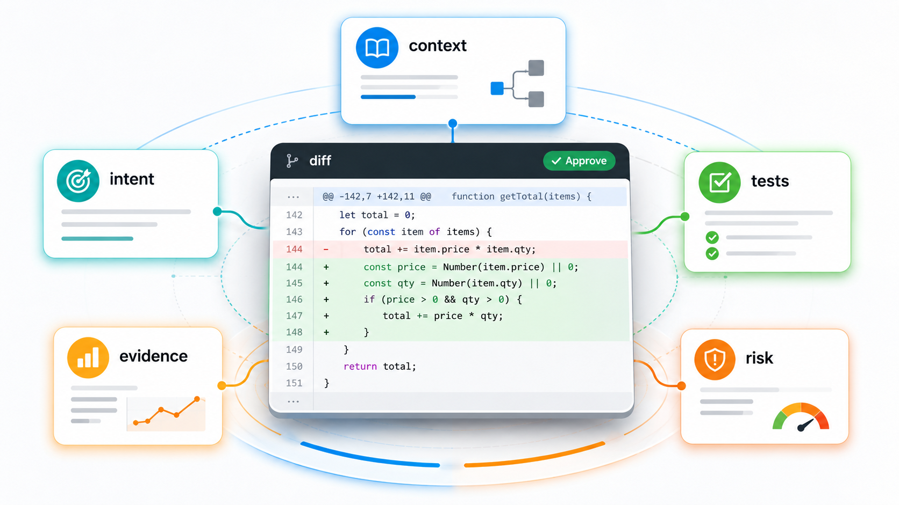
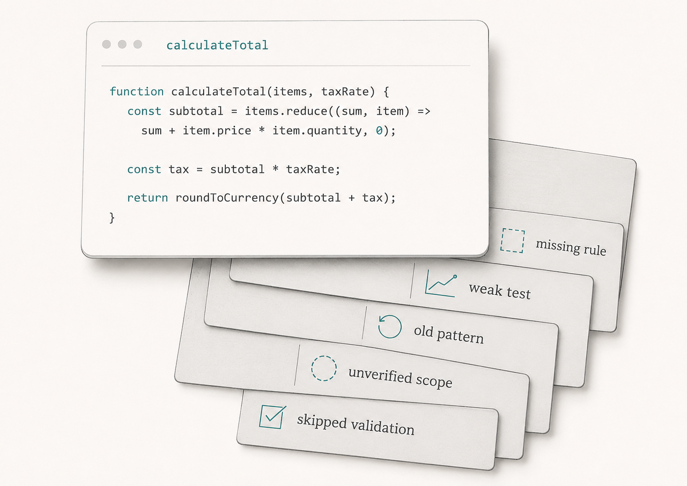
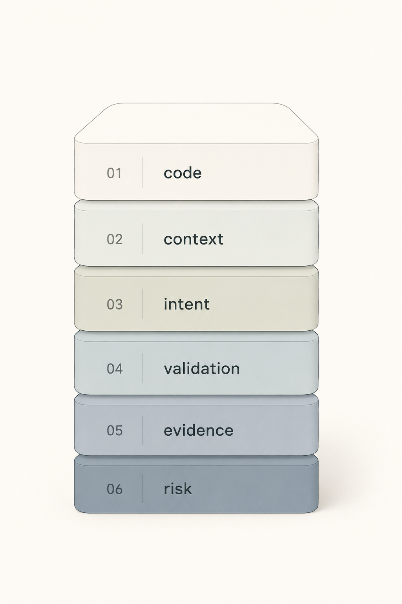

The pull request looked easy to approve.
The code was clean. The naming matched the service. The diff was not too large. The assistant summary was confident: validation was improved, tests were added, and all checks passed.
At first glance, it looked like a good AI-assisted change.
Then the reviewer slowed down.
The ticket only said, "Fix validation for missing transfer amount." The assistant had changed a shared payment validator, touched a service method, and added tests that only checked whether "an error" was returned. The tests did not verify the exact error code, currency-specific behavior, zero-amount handling, or cross-border transfer rules. The implementation also copied an older validation pattern that the team had been moving away from.
Nothing in the diff looked obviously careless.
That was the problem.
The code was clean enough to hide the weak assumptions behind it.

This is why AI code review is not just code review. A reviewer cannot only ask whether the code is readable, consistent, and tested. Those questions still matter, but they are not enough.
For AI-assisted changes, the reviewer also has to ask:
- What context did the assistant receive?
- What intent did it infer?
- What assumptions did it make?
- What evidence supports the behavior?
- What validation path was actually run?
- What risks did the change introduce?
AI code review is really evidence review, context review, and engineering judgment combined.

The diff is not the whole story
Traditional code review often starts with the diff.
That makes sense. The diff shows what changed. Reviewers inspect design, functionality, complexity, tests, naming, comments, style, and documentation. Google's public code review guidance covers this broader view of review well. Good code review has never been only formatting.
But AI-assisted work changes the review surface.
The diff may be a clean implementation of a bad assumption.
A human developer can do that too. Human-written code can also misunderstand requirements, miss edge cases, or copy old patterns. The difference with AI is the combination of speed, polish, and incomplete uncertainty signals.
AI assistants often continue from the context they have. If the ticket is thin, they fill gaps. If the repository contains old examples, they may copy them. If tests show only the happy path, they may generate more happy-path tests. If business rules are missing, the implementation may ignore them without looking obviously wrong.
The pull request can arrive with clean code, generated tests, a tidy summary, and passing CI.
That presentation can make the change feel more reliable than it is.
Reviewers need to resist that effect.
The question is not only, "Is this code acceptable?"
The better question is, "Is this the right change, based on the right context, validated in the right way?"
AI hides assumptions differently
When an experienced developer makes an uncertain change, the uncertainty often leaks into the workflow.
They might write, "I was not sure whether this applies to cross-border transfers." They might ask a product manager. They might leave a comment in the pull request. They might avoid touching a shared validator until someone confirms the scope.
AI-generated code often does not expose uncertainty that way.
It tends to produce a complete-looking answer from incomplete context. That is useful when the task is low-risk and well bounded. It is dangerous when the missing context contains the important rule.
Suppose the assistant is asked to fix validation for a missing transfer amount. It sees a shared validator and updates it. That may be correct. Or it may accidentally affect domestic transfers, cross-border transfers, wallet transfers, and bill payments differently. The assistant may not know that one payment type allows a zero-value authorization step. It may not know that one currency has different decimal handling. It may not know that a specific error code is required for downstream support tooling.
The code can still look clean.
That is why review has to become assumption hunting.
Look for decisions the assistant made silently:
- Which scope did it choose?
- Which old pattern did it copy?
- Which business rule did it assume?
- Which edge case did it ignore?
- Which tests did it treat as enough?
- Which files did it decide were safe to change?
These questions are important because AI can make silent decisions quickly and present the result as finished.
Context review comes before code approval
For an AI-assisted pull request, reviewers should inspect the input context as part of review.
That does not mean reading every prompt transcript. Most of the time, prompt history is too noisy to be the engineering source of truth.
It means checking whether the assistant had the context needed to produce the right change.
Was the ticket clear? Did it include the business rule? Were acceptance criteria specific? Were non-goals visible? Did the assistant see the current ADR or only the old code? Did the repository instructions explain the testing expectation? Did the task mention sensitive areas, rollout constraints, or domain-owner review?
DORA's guidance on AI-accessible internal data points to the practical need for relevant internal context such as codebases, documentation, style guides, architecture diagrams, and operational information. The review implication is direct. If the relevant context was not available, the reviewer should treat the output with caution.
This is especially important when the change touches business behavior.
Code files rarely contain the full rule. A ticket may say "validate transfer amount," but the real behavior may depend on product limits, currencies, customer segment, compliance logging, and support workflows. If those rules were not in the task context, the assistant may have implemented the generic version.
Reviewers should ask: would a new developer find the same rule from the available materials?
If the answer is no, the AI probably did not have a reliable path to it either.
Intent review checks what changed and why
Once context is clear, review the intent.
What behavior is supposed to change?
This sounds basic, but many AI-assisted pull requests blur the intent. The assistant may fix the bug, clean up nearby code, adjust a helper, rename a method, and add tests all in one pass. Some of those changes may be useful. Some may be unrelated. Some may make review harder.
The reviewer should separate the intended change from incidental change.
For the validation example, the intent might be narrow:
"When transfer amount is missing, return TRANSFER_AMOUNT_REQUIRED without throwing a generic exception."
That intent is reviewable.
"Improve payment validation" is not.
Once intent is clear, the reviewer can ask whether the diff matches it. Did the assistant change only the relevant validation path? Did it alter behavior for other payment types? Did it change public response contracts? Did it update shared code without explaining why? Did it introduce a new abstraction because it looked cleaner rather than because the change required it?
AI-generated changes often need scope review because assistants can be very helpful in the wrong direction.
Reviewability is part of quality.
If the reviewer cannot easily explain what changed and why, the team should slow down before approval.
Test review is not coverage review
AI assistants can generate tests quickly.
That is helpful, but it creates another review trap. Test presence can be mistaken for test quality.
Generated tests often mirror the implementation. They may prove that the code does what the assistant wrote, not that the system does what the requirement needs. They may assert that some error exists rather than checking the exact behavior. They may mock away the dependency that carries the risk. They may skip boundary cases because the ticket did not name them.
Reviewers should read generated tests with the same skepticism as generated code.
Ask:
- Do the tests prove the intended behavior?
- Do they cover the important boundary cases?
- Do they fail for the old bug?
- Do they protect against the risky regression?
- Are they checking exact outcomes or vague existence?
- Did the assistant weaken any existing test to make the suite pass?
- Were the right tests actually run?
The last question matters.
"All tests pass" is not enough if only unit tests ran and the risky behavior sits in contract tests, integration tests, or production-like flows.
Tests are evidence.
They are not proof.
Evidence review asks why the change is safe
For low-risk changes, evidence can be small. A focused diff, clear PR description, relevant tests, and passing CI may be enough.
For higher-risk changes, the reviewer needs more.
Payments, authentication, authorization, data deletion, migrations, customer notifications, external integrations, compliance-sensitive logic, and production reliability controls deserve stronger evidence.
Evidence might include the issue context, acceptance criteria, non-goals, business rules, ADR links, test execution output, CI results, security or domain review, rollout notes, monitoring expectations, and ownership of remaining risk.
This is not bureaucracy for its own sake. It is how reviewers avoid approving a clean diff with weak understanding.
The evidence-chain article in this series made a similar point: for important AI-assisted changes, future engineers should be able to reconstruct what changed, why the team believed it was safe, how it was validated, who reviewed it, how it was rolled out, and who owned the decision.
That same thinking belongs inside code review.
Before approving, ask: what would I need to believe for this change to be safe, and where is the evidence?
If the evidence is missing, the review is not done.
Risk review scales the depth
Not every AI-assisted change needs a heavyweight process.
A typo fix does not need a design review. A small internal refactor may not need product review. A local unit test cleanup may not need a rollout plan.
The review depth should scale with consequence.
The question is not "Was AI used?"
The better question is "What happens if this change is wrong?"
If the answer is "a label looks slightly off," keep the review lightweight. If the answer is "customers can be charged twice," "private data can leak," "a migration can delete records," or "support cannot recover during an incident," the review needs stronger evidence and the right humans involved.
NIST's AI Risk Management Framework is useful here because it frames AI risk around context, mapping, measurement, management, and governance. Software teams do not need to turn every AI-assisted pull request into a compliance exercise. They do need a risk-aware review path.
Risk review should consider customer impact, security and privacy, financial or compliance exposure, production reliability, reversibility, blast radius, ownership, and observability.
That is engineering judgment.
AI can help surface risks, but it cannot accept them on behalf of the team.
A practical review checklist
For AI-assisted pull requests, I would add a few questions to normal code review.
Context: Was the task clear enough? Were business rules, constraints, and non-goals visible? Did the assistant use current guidance, not stale examples?
Intent: Can the intended behavior change be stated in one or two sentences? Does the diff match that intent? Are unrelated changes separated or removed?
Assumptions: What did the assistant appear to assume? Are those assumptions written down and checked? Are there domain questions for product, security, operations, or architecture?
Validation: Do tests prove the intended behavior? Do they cover boundaries, failures, and important regressions? Which test commands actually ran?
Evidence: Is there enough evidence to approve this change? Are ADRs, business rules, rollout notes, or domain reviews linked when needed? Could a future engineer reconstruct the decision?
Risk: What could happen if this change is wrong? Is the review depth appropriate for that consequence? Who owns the remaining risk?
This checklist should not become a form people fill out mechanically. Its purpose is to change the review posture.
Do not only inspect the code.
Inspect the conditions that produced the code.
AI review tools can help, but they are not approval
AI can also review code.
That can be useful. A review assistant can summarize a diff, compare it against acceptance criteria, point out missing tests, detect broad scope, check consistency with repository instructions, or generate risk questions for the human reviewer.
But an AI review is not accountability.
The review assistant may miss the same missing business rule as the implementation assistant. It may reason from stale documentation. It may focus on code style because the real risk sits in product intent. It may approve tests that look structured but do not prove the behavior.
This is why implementation and review should be separated, and why human review still matters.
Let AI help with review.
Do not let AI become the only reason a change is approved.
Three practical takeaways
First, treat AI code review as more than diff review. Inspect context, intent, assumptions, validation, evidence, and risk.
Second, review generated tests as carefully as generated code. A test can increase coverage without increasing confidence.
Third, scale review depth with consequence. Low-risk changes should stay lightweight. High-risk changes need stronger evidence, domain review, and clear human ownership.
The approval question
The next time an AI-assisted pull request looks clean, pause before approving it.
Do not only ask whether the code is readable.
Ask what had to be true for the change to be correct.
Did the assistant have the right context? Did it understand the intent? Did it make assumptions? Do the tests prove the behavior that matters? Is the validation path visible? Is the risk acceptable? Is there enough evidence for someone else to understand this decision later?
That is the real review.
AI can produce code, tests, summaries, and review notes quickly.
The human reviewer still has to decide whether the change deserves trust.
AI code review is not just code review.
It is context review, evidence review, and engineering judgment.